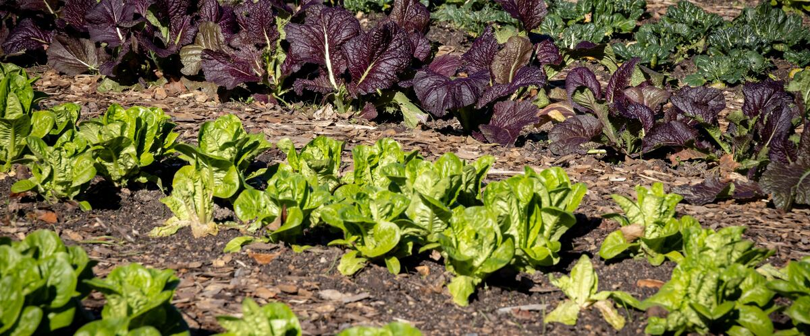

Planting dates and growing guide
When to plant mustard greens
Plant in the garden: Portland and Seattle Mar 1 – Apr 12; Spokane Apr 1 – May 13; Boise Mar 20 – May 1; Bend Apr 28 – Jun 9.
Your dates in
Mustard greens are leafy cabbage-family plants with a sharp, horseradish-like bite, cooked in Southern, Indian and East Asian dishes or used young in salad mixes. They come in green, red, frilly and broad-leaved types, from feathery mizuna to big purple Red Giant. Seeds from some mustard species are what's ground into the condiment.
Sow again for fall They bolt as spring days lengthen. Sow early, and again in late summer for mild fall leaves.
Puts mustard greens on your free plan, with dates for your town and a spot in your beds.
- Difficulty
- Easy
- Sun
- Full sun to part shade
- Spacing
- Thin to 6 to 12 inches apart
- Planting depth
- ¼ to ½ inch deep
- Frost
- Handles light frost
- First harvest
- About 40 days after planting
Fast, peppery greens that handle frost. Like arugula, they bolt as spring days lengthen, so sow early and sow again in late summer for the mildest fall and winter leaves.
Mustard green planting dates
| Towns | Plant in the garden | Plant again for fall |
|---|---|---|
| Portland, OR, Seattle and Tacoma, WA | Mar 1 – Apr 12 | Aug 20 – Sep 10 |
| Spokane, WA | Apr 1 – May 13 | Aug 17 – Sep 7 |
| Boise and Meridian, ID | Mar 20 – May 1 | Aug 20 – Sep 10 |
| Bend and Redmond, OR | Apr 28 – Jun 9 | Jul 20 – Aug 10 |
| Astoria, OR | Mar 25 – May 6 | Aug 20 – Sep 10 |
For any of the other 110 towns, type it in the box at the top of the page or browse all towns.
| Gresham, OR, Oregon City and West Linn, OR, Portland, OR, St. Helens and Scappoose, OR, Wilsonville and Canby, OR | Mar 1 – Apr 12 | Aug 20 – Sep 10 |
|---|---|---|
| Hillsboro and Beaverton, OR | Mar 5 – Apr 16 | Aug 20 – Sep 10 |
| Corvallis and Albany, OR, Eugene, OR, Salem, OR | Mar 1 – Apr 12 | Aug 20 – Sep 10 |
|---|---|---|
| Cottage Grove, OR, Oakridge, OR | Mar 13 – Apr 24 | Aug 20 – Sep 10 |
| McMinnville and Newberg, OR | Mar 4 – Apr 15 | Aug 20 – Sep 10 |
| Ashland and Talent, OR | Mar 25 – May 6 | Aug 13 – Sep 3 |
|---|---|---|
| Cave Junction, OR | Mar 20 – May 1 | Aug 17 – Sep 7 |
| Grants Pass, OR, Medford, OR, Roseburg, OR | Mar 1 – Apr 12 | Aug 20 – Sep 10 |
| Astoria, OR, Brookings and Gold Beach, OR, Coos Bay and North Bend, OR, Florence, OR, Newport and Lincoln City, OR, Port Orford, OR, Tillamook, OR | Mar 25 – May 6 | Aug 20 – Sep 10 |
|---|
| Bend and Redmond, OR | Apr 28 – Jun 9 | Jul 20 – Aug 10 |
|---|---|---|
| Burns, OR | Apr 30 – Jun 11 | Jul 12 – Aug 2 |
| Klamath Falls, OR | Apr 28 – Jun 9 | Jul 24 – Aug 14 |
| Lakeview, OR | Apr 23 – Jun 4 | Jul 23 – Aug 13 |
| Madras, OR | Apr 20 – Jun 1 | Aug 9–30 |
| Prineville, OR | Apr 20 – Jun 1 | Jul 28 – Aug 18 |
| Baker City, OR | Apr 20 – Jun 1 | Jul 21 – Aug 11 |
|---|---|---|
| Condon, OR | Apr 20 – Jun 1 | Aug 12 – Sep 2 |
| Enterprise and Joseph, OR | Apr 20 – Jun 1 | Aug 6–27 |
| Heppner, OR, Pendleton, OR, The Dalles, OR | Mar 20 – May 1 | Aug 20 – Sep 10 |
| Hermiston, OR | Mar 20 – May 1 | Aug 15 – Sep 5 |
| Hood River, OR | Mar 20 – May 1 | Aug 18 – Sep 8 |
| John Day, OR | Apr 20 – Jun 1 | Jul 24 – Aug 14 |
| La Grande, OR | Apr 1 – May 13 | Aug 6–27 |
| Ontario, OR | Mar 20 – May 1 | Aug 19 – Sep 9 |
| Bremerton and Port Orchard, WA, Everett, WA, Kent, Renton and Auburn, WA, Seattle and Tacoma, WA | Mar 1 – Apr 12 | Aug 20 – Sep 10 |
|---|---|---|
| Olympia, WA | Mar 18 – Apr 29 | Aug 19 – Sep 9 |
| Shelton, WA | Mar 16 – Apr 27 | Aug 20 – Sep 10 |
| Anacortes, WA, Bellingham, WA, Blaine, WA, Friday Harbor and the San Juans, WA, Mount Vernon and Burlington, WA, Oak Harbor and Whidbey Island, WA | Mar 1 – Apr 12 | Aug 20 – Sep 10 |
|---|
| Aberdeen and Hoquiam, WA, Forks, WA, Long Beach and Ilwaco, WA, Raymond, WA | Mar 25 – May 6 | Aug 20 – Sep 10 |
|---|---|---|
| Port Angeles, WA, Port Townsend, WA | Mar 1 – Apr 12 | Aug 20 – Sep 10 |
| Sequim, WA | Mar 10 – Apr 21 | Aug 20 – Sep 10 |
| Centralia and Chehalis, WA | Mar 11 – Apr 22 | Aug 20 – Sep 10 |
|---|---|---|
| Longview and Kelso, WA, Vancouver, WA | Mar 1 – Apr 12 | Aug 20 – Sep 10 |
| Chelan, WA, Wenatchee, WA | Mar 20 – May 1 | Aug 20 – Sep 10 |
|---|---|---|
| Leavenworth, WA | Apr 1 – May 13 | Aug 5–26 |
| Omak and Okanogan, WA | Apr 1 – May 13 | Aug 12 – Sep 2 |
| Republic, WA | Apr 18 – May 30 | Jul 16 – Aug 6 |
| Winthrop and Twisp, WA | Apr 3 – May 15 | Jul 28 – Aug 18 |
| Cle Elum, WA | Apr 1 – May 13 | Jul 31 – Aug 21 |
|---|---|---|
| Dayton, WA | Mar 20 – May 1 | Aug 18 – Sep 8 |
| Ellensburg, WA | Apr 1 – May 13 | Aug 12 – Sep 2 |
| Ephrata and Quincy, WA, Walla Walla, WA | Mar 20 – May 1 | Aug 20 – Sep 10 |
| Goldendale, WA | Apr 7 – May 19 | Jul 31 – Aug 21 |
| Moses Lake, WA | Mar 20 – May 1 | Aug 13 – Sep 3 |
| Pomeroy, WA | Mar 21 – May 2 | Aug 9–30 |
| Sunnyside, Grandview and Prosser, WA | Mar 20 – May 1 | Aug 11 – Sep 1 |
| Tri-Cities (Pasco, Kennewick, Richland), WA | Mar 20 – May 1 | Aug 16 – Sep 6 |
| Yakima, WA | Mar 27 – May 8 | Aug 9–30 |
| Chewelah, WA | Apr 4 – May 16 | Jul 21 – Aug 11 |
|---|---|---|
| Colville, WA, Pullman, WA | Apr 1 – May 13 | Aug 7–28 |
| Davenport, WA | Apr 25 – Jun 6 | Jul 17 – Aug 7 |
| Deer Park, WA | Apr 10 – May 22 | Jul 20 – Aug 10 |
| Newport, WA | Apr 1 – May 13 | Jul 27 – Aug 17 |
| Ritzville, WA | Apr 1 – May 13 | Aug 15 – Sep 5 |
| Spokane, WA | Apr 1 – May 13 | Aug 17 – Sep 7 |
| Bonners Ferry, ID, St. Maries, ID | Apr 1 – May 13 | Aug 9–30 |
|---|---|---|
| Coeur d'Alene and Post Falls, ID | Apr 1 – May 13 | Aug 20 – Sep 10 |
| Kellogg, ID | Apr 2 – May 14 | Aug 1–22 |
| Sandpoint, ID | Apr 1 – May 13 | Aug 3–24 |
| Wallace, ID | Apr 1 – May 13 | Aug 7–28 |
| Grangeville, ID | Apr 1 – May 13 | Aug 8–29 |
|---|---|---|
| Lewiston, ID | Mar 20 – May 1 | Aug 20 – Sep 10 |
| Moscow, ID | Apr 1 – May 13 | Aug 7–28 |
| Boise and Meridian, ID, Emmett, ID | Mar 20 – May 1 | Aug 20 – Sep 10 |
|---|---|---|
| Cascade, ID | Apr 20 – Jun 1 | Jul 25 – Aug 15 |
| McCall, ID | May 11 – Jun 22 | Jul 8–29 |
| Nampa and Caldwell, ID | Mar 20 – May 1 | Aug 18 – Sep 8 |
| Arco, ID | Apr 20 – Jun 1 | Jul 28 – Aug 18 |
|---|---|---|
| Ashton, ID | Apr 20 – Jun 1 | Jul 27 – Aug 17 |
| Blackfoot, ID, Glenns Ferry, ID | Apr 1 – May 13 | Aug 8–29 |
| Burley and Rupert, ID, Twin Falls, ID | Apr 1 – May 13 | Aug 9–30 |
| Challis, ID | Apr 20 – Jun 1 | Jul 31 – Aug 21 |
| Driggs, ID | May 2 – Jun 13 | Jul 15 – Aug 5 |
| Idaho Falls, ID | Apr 1 – May 13 | Aug 6–27 |
| Malad City, ID | Apr 10 – May 22 | Jul 26 – Aug 16 |
| Pocatello, ID | Apr 1 – May 13 | Aug 16 – Sep 6 |
| Preston, ID | Apr 4 – May 16 | Aug 3–24 |
| Rexburg, ID | Apr 1 – May 13 | Jul 30 – Aug 20 |
| Salmon, ID | Apr 20 – Jun 1 | Jul 30 – Aug 20 |
Mustard green year at a glance
| Task | J | F | M | A | M | J | J | A | S | O | N | D |
|---|---|---|---|---|---|---|---|---|---|---|---|---|
| Plant | Mar | Apr | Aug | Sep | ||||||||
| Harvest | Apr | May | Jun | Oct | Nov | Dec |
Shown for Portland. Pick your town in the table above for its own dates.
How to grow mustard greens
- Prepare the bed: loosen the soil and mix in an inch or two of compost.
- Plant seeds on your town's dates, ¼ to ½ inch deep, Thin to 6 to 12 inches apart.
- Keep the soil evenly moist until sprouts appear, which can take one to three weeks in cool soil.
- Plant again on your town's dates for a fall harvest.
- Harvest: Pick baby leaves about three weeks after sowing, or cut outer leaves from full-size plants. Leaves picked after a frost are milder.
Growing mustard greens in your part of the Northwest
West-side valleys
Willamette Valley, Puget Sound, southern Oregon
Mustard greens are easy in spring and fall. Fall sowings often hold through winter in mild years.
Coast
Oregon and Washington coast
Cool summers let mustard greens grow longer before bolting.
East of the Cascades
Columbia Basin, Yakima, Boise, Spokane, north Idaho
Heat makes mustard greens bolt and taste harsh, so sow early or for fall.
High desert and mountain towns
Central Oregon, high eastern Oregon valleys, McCall, Salmon
Mustard greens handle frost and grow well in the cool summers.
More mustard green varieties
More widely sold picks that do well somewhere in the Northwest. The tag says which part of the Northwest suits each one best.
Red Giant
Big, crinkled, purple-red leaves with a strong, hot bite. Very cold-hardy, it's a favorite for fall sowing and stays mildest after frost.
Both sides
Green Wave
Frilly, bright green leaves with a sharp, spicy flavor. Slower to bolt than most mustards, which helps with spring sowings.
Both sides
Mizuna
Mild, finely cut leaves for salads, and one of the most heat- and cold-tolerant Asian greens. Cut it young and it regrows several times.
Both sides
Southern Giant Curled
Large, ruffled, light green leaves for cooking. An old, widely sold variety that's dependable in fall.
Both sides
How much to grow
How many to plant
For a family of four, a 4- to 6-foot row every three weeks in spring and a bigger sowing in late summer.
What to expect
About 1 pound per 2 feet of row over several pickings.
Storing the harvest
Keep about a week in a bag in the fridge. Blanch and freeze extras.
What to plant after mustard greens
Around Portland, the mustard green harvest wraps up around June. These crops can still go into the same bed, and they come from a different plant family, which helps with rotation.
- Bush beans May 10 – Jun 21
- Sweet corn May 10 – Jun 14
- Pole beans May 10 – Jun 14
- Cucumbers May 15 – Jun 12
- Zucchini and summer squash May 15 – Jun 12
- Tomatoes May 15 – Jun 12
- Tomatillos May 15 – Jun 12
- Celery May 15 – Jun 19
Portland dates. Pick your town at the top of the page for yours.
Key numbers
- 45–85°F Soil to sprout
- About 21 Days to baby leaves
- 40–50 Days to full size
- Flea beetles Biggest risk
Top care tip: Sow small batches every few weeks and keep the soil evenly moist, since dry plants turn tough and extra hot.
Growing notes
What makes the difference in Northwest gardens, in plain language.
Two seasons, not one
Mustard greens are a cool-season brassica, close kin to kale and turnips. They sprout quickly in cool soil, shrug off light frost and grow fast, which makes them one of the easiest greens for early spring and fall in the Northwest.
Long, warm days push them to flower. Spring sowings give you a few weeks of leaves before they bolt, so sow early and in small batches. The better crop here is the late-summer sowing: plants size up in September and October, and frost turns the leaves milder and sweeter.
Soil, spacing and flavor
Any reasonably fertile bed with compost works. Thin seedlings to 6 inches for baby leaves or about a foot for big plants, and eat the thinnings. Even moisture keeps the leaves tender; plants that dry out get tough and much hotter.
Heat sharpens the bite and cold mellows it. Red Giant and other big-leaf types are the spiciest, while mizuna is mild enough for salads.
Pests to watch
Flea beetles chew tiny shot holes in spring seedlings, and cabbage worms and aphids show up later, just as on kale. Floating row cover laid on at sowing keeps both the beetles and the cabbage moths off. Slugs are the main fall and winter pest west of the Cascades.
Rotate mustard with crops outside the cabbage family, since the same pests and soil diseases build up when brassicas follow brassicas.
Good neighbors and crop rotation
Good neighbors
- Lettuce and spinach. Same cool-season timing; mix them for a spicy salad bed.
Keep apart
- Other cabbage-family crops in the same bed every year. Shared pests and clubroot build up; rotate.
Cabbage family: Grow cabbage-family crops in a different bed each year and come back to the same spot only every three or four years. Clubroot, which swells and knots the roots, lives in the soil for many years once it arrives, and root maggot pupae wait in last year's bed.
Pests and problems
What most often goes wrong with mustard greens in Northwest gardens, how to spot it and what to do.
Flea beetles
Signs: Tiny holes in the leaves in spring.
What to do: Row cover from sowing.
Slugs
Signs: Ragged holes in wet weather.
What to do: Slug bait and evening checks.
Bolting
Signs: Flower stalks and hot, tough leaves in late spring.
What to do: Grow it as a fall crop, when it holds much longer.
Common questions about growing mustard greens
When should I plant mustard greens in Oregon, Washington and Idaho?
Plant in the garden: Mar 1 – Apr 12 in Portland and Seattle, Apr 1 – May 13 in Spokane, Mar 20 – May 1 in Boise and Apr 28 – Jun 9 in Bend. Pick your town at the top of the page for your own dates.
Why did my mustard greens bolt so fast?
Lengthening days and warm weather trigger flowering. Spring-sown mustard often bolts by June. Sow as early as the soil can be worked, pick often, and plant your main crop in late summer instead.
Can I grow mustard greens through winter in the Northwest?
On the west side and coast, yes in most winters. Plants sown in August keep producing into winter and survive light frosts. A hard freeze in the teens can damage them, so cover with row cover on the coldest nights.
Are mustard flowers edible?
Yes. The yellow flowers and tender flower buds are edible and mildly spicy. Once plants flower, though, the leaves turn tough and bitter.
See what else to plant in March, April, August or September.